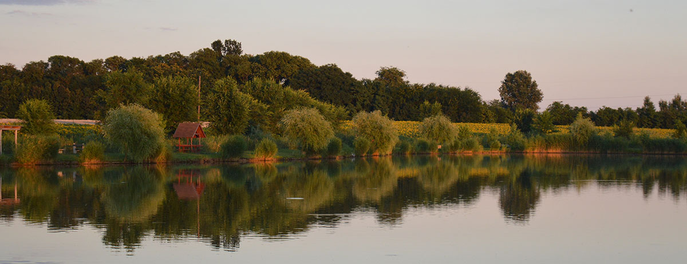
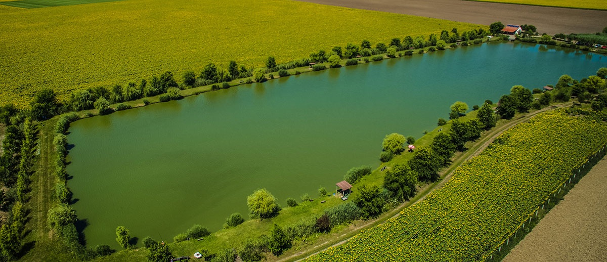
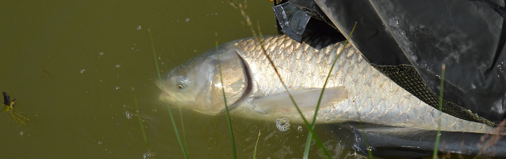

A zalai dombok közt megbúvó Kerka-parti kisváros, Lenti bányatavából alakították ki a Szénaréti horgásztavat. A város észak-keleti végén elterülő 6 hektáros horgásztó csodálatos környezetben, folyamatosan bővülő szolgáltatásokkal várja mind a horgászokat, mind a pihenni, kikapcsolódni vágyókat. A tó partján épült 13 faház kitűnő szálláslehetőséget kínál családi hétvégék, baráti társaságok összejöveteleihez. Az erősen feltörő forrásoknak köszönhetően állandó, bő, átfolyó vízhozam, a jelentős, helyenként 4-6 méteres vízmélység és a nagyon jó vízminőség lehetővé tette az intenzív haltelepítést. 6 hektáron elterülő bányatavak gyönyörűen rendben tartott környezetben, igényes szolgáltatásokkal várják a látogatókat és horgászokat. A rendszeres telepítésnek köszönhetően senki sem távozik csalódottan.
A Szénaréti egy körtöltéses tó. A töltés koronája 5-8 m széles, a tó felőli töltésrézsű 1/5-ös, vagyis egyáltalán nem meredek - a gyerekek is kényelmesen lesétálhatnak a víz szélére -, töltésvédelemre nincsen szükség, a hullámok szabadon felfutnak a rézsűn. A töltésre fűzfákat telepítettünk, felületét fű borítja. A horgásztó és a töltésének területe összesen 2,9 ha.
A tó alakja nem szabályos (leginkább egy folyószakaszra emlékeztet). Az északi és déli zárótöltés egyenes (az egyik 90 m hosszú, a másik pedig 110 m), a nyugati part két egyenes szakaszból áll, összesen 280 m hosszan, egy törésponttal, a keleti part pedig hullámos, öblökkel, kiszögellésekkel tagolt (320 m hosszú).
A tó halállománya főleg pontyfélékből (tükörponty, tőponty, nyurgaponty, koi ponty), amúrból, tokhalból, kárászból, keszegfélékből, compóból áll. Ragadozó halként a csukák a jellemzőek, de előfordul benne süllő és folyami harcsa is.
Fogható halak: ponty, amur, csuka, süllő, keszeg, kárász, balin, busa, sügér, törpeharcsa, kősüllő, domolykó, naphal
A horgásztó folyamatos vízutánpótlását, kiváló vízminőségét a Látóképi víztározó biztosítja.
Az üzemvízszint fenntartására korlátlan mennyiségű víz áll rendelkezésünkre.
A horgásztó partján épült 13 összkomfortos faház, összesen 21 kiválóan felszerelt, klimatizált apartmannal várja vendégeinket, gyönyörű és folyamatosan gondozott környezetben.
6 hektárnyi intenzíven telepített 3 tóból álló vízterületen várjuk horgászainkat. A kimagasló horgászélményért Rekord tavunkba, kizárólag 5 kg feletti halakat telepítünk.
A Szénaréti Kemping 16 lakóautó és lakókocsi számára kínál helyet a Szlovén és Horvát határ mellett a horgásztó partján. Külön fürdő, öltöző és mosdó helyiség és tűzrakóhely várja vendégeinket.